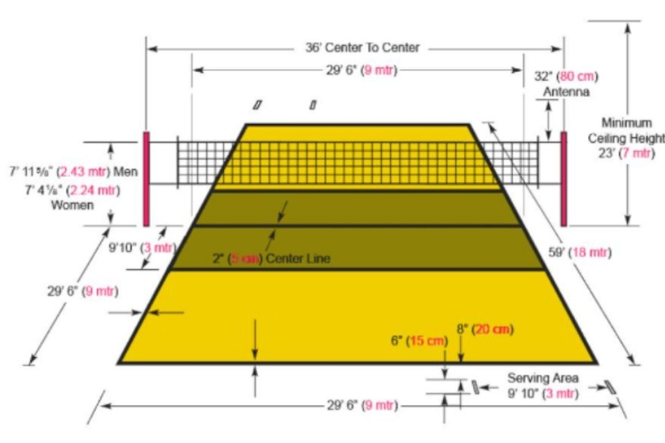

Sejarah bola voli
Pada awal penemuannya, olahraga permainan bola voli ini diberi nama Mintonette. Olahraga ini pertama kali ditemukan oleh seorang Instruktur pendidikan jasmani (Director of Phsycal Education) yang bernama William G. Morgan di YMCA pada tanggal 9 Februari 1895 di Holyoke Massachusetts (Amerika Serikat) Morgan, yang juga merupakan lulusan Springfield College of YMCA menciptakan permainan ini empat tahun setelah diciptakannya olahraga.

Lapangan permainan
Ukuran lapangan bola voli yang umum adalah 9 meter x 18 meter.Garis batas serang untuk pemain belakang berjarak 3 meter dari garis tengah (sejajar dengan jaring). Garis tepi lapangan adalah 5 meter.